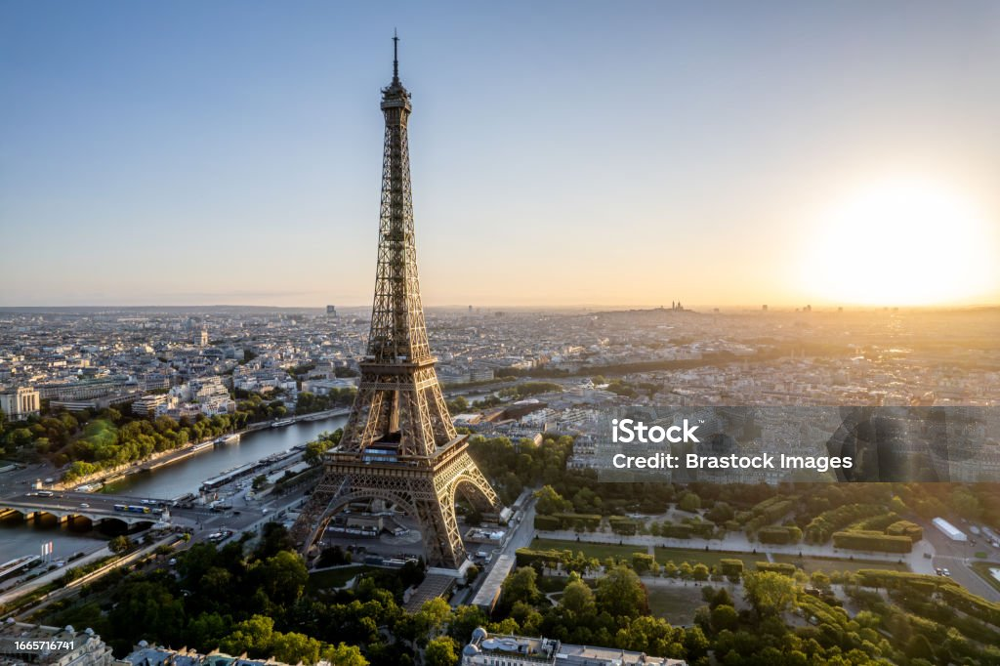
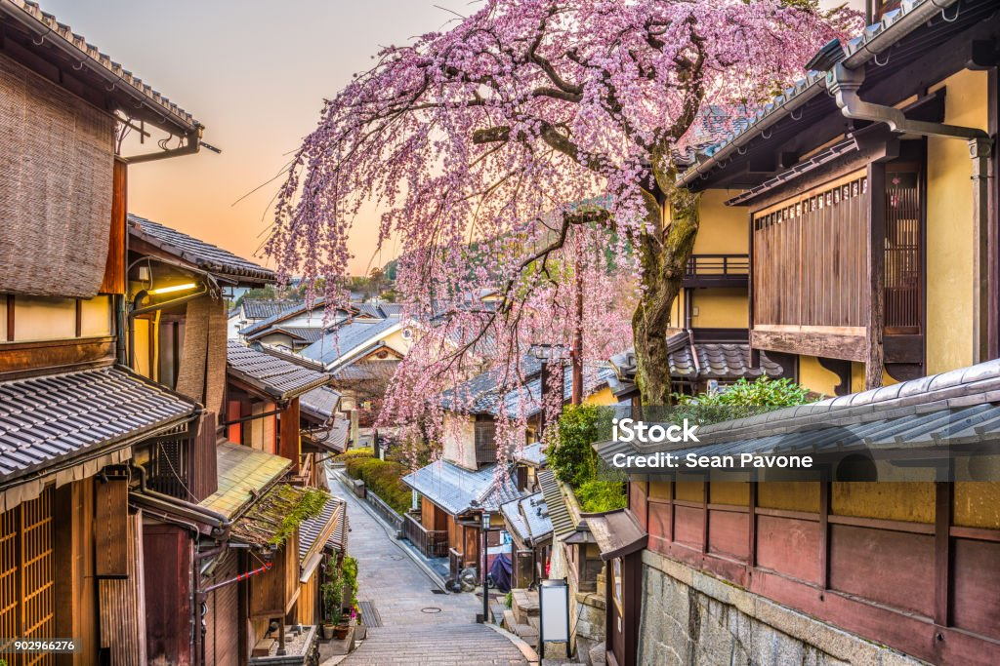
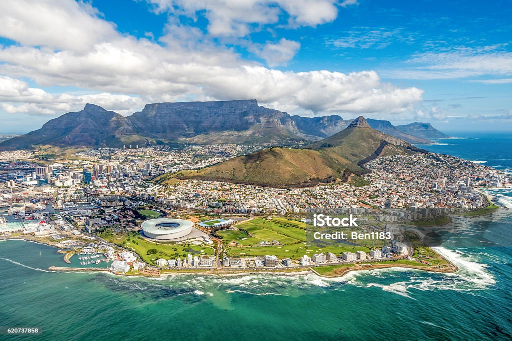
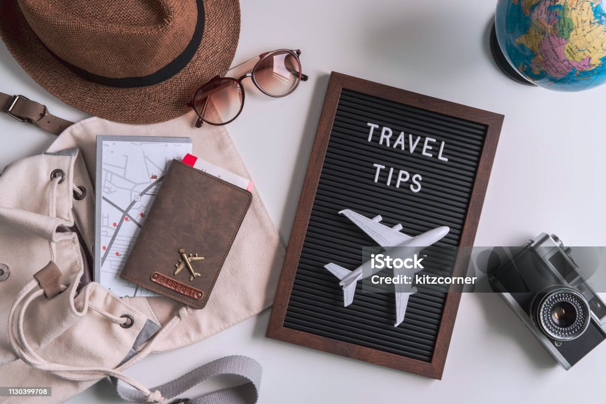

Una Semana en Islandia
Explora los paisajes impresionantes de Islandia, desde sus glaciares hasta sus géiseres. Una experiencia única en la vida.
Leer más...Guías, Consejos y Relatos de Viajes
Descubre algunos de los destinos más asombrosos del mundo. Desde las playas paradisíacas de Bali hasta las históricas calles de Roma, hay un lugar perfecto para cada tipo de viajero.
París, Francia: La ciudad del amor, famosa por la Torre Eiffel, el Louvre, y su exquisita gastronomía.
Kyoto, Japón: Un viaje al pasado con sus templos antiguos y jardines zen.
Ciudad del Cabo, Sudáfrica: Naturaleza impresionante y cultura vibrante.
Viajar puede ser una experiencia increíble, pero es importante estar bien preparado. Aquí tienes algunos consejos útiles:
Lee nuestros últimos artículos sobre experiencias de viaje, anécdotas y recomendaciones para disfrutar al máximo tus aventuras por el mundo.
Explora los paisajes impresionantes de Islandia, desde sus glaciares hasta sus géiseres. Una experiencia única en la vida.
Leer más...Viajar no tiene que ser caro. Aquí te contamos cómo puedes explorar el mundo sin vaciar tu bolsillo.
Leer más...¿Tienes alguna pregunta o quieres compartir tu experiencia de viaje? ¡Nos encantaría saber de ti!
Email: viajes@mimundo.com
Teléfono: +123456789